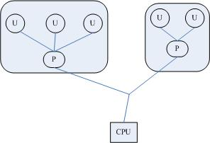
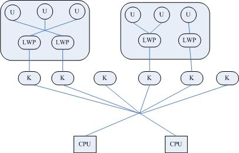

进程与线程
教科书上最经典的一句话是“进程是资源分配的最小单位，线程是CPU调度的最小单位”。 程序一般包括代码段、数据段和堆栈，对具有GUI的程序还包含资源段。而进程（process）是应用程序的执行实例，即正在被执行的程序。 每个进程都有自己的虚拟地址空间，并拥有操作系统分配给它的一组资源，包括堆栈、寄存器状态等。线程（thread）是CPU的调度单位，是进程中的一个可执行单元，是一条独立的指令执行路径。线程只有一组CPU指令、一组寄存器和一个堆栈，它本身没有其他任何资源，而是与拥有它的进程共享几乎一切，包括进程的数据、资源和环境变量等。线程的创建、维护和管理给操作系统的负担比进程要轻得多，所以才叫轻量级的进程（lightweight process）。 线程，原意是缝衣线的意思。执行流程像衣服上的线一样，一会儿出现，一会儿消失（一会儿执行，一会儿停止）。或许名字也起源于这种联想吧。
一个进程可以拥有多个线程，而一个线程只能属于一个进程。每个进程至少包含一个线程——主线程，它负责程序的初始化工作，并执行程序的起始指令。随后，主线程可为执行各种不同的任务而分别创建多个子线程。
一个程序并发运行，可以通过启动该程序的多子进程来实现，也可以通过该进程创建多个线程来实现。 但对于前者，因各个进程完全独立，如果进程间需要共享信息则会很麻烦。假设某个进程（父进程）启动了别的进程（子进程）。进程之间具有独立的内存空间，子进程中的变量值更改了，也不会影响到父进程。这样，进程之间就必须进行通信。这就只能通过管道或socket的方式来传递信息。 （管道是pipe，是把某一个程序的标准输出传递给另一个进程，作为其标准输入的一种参数传递方式，例如 cat file| more)
与进程不同，同一进程的线程是可以共享内存空间。所以不同的线程能够引用同一对象。显然后者要比前者更高效，更能节约系统的有限资源。这对需要在同一时刻响应成千上万个用户请求的Web服务器程序和网络数据库管理程序等来说是至关重要的。
实现线程主要有三种方式： 使用内核线程实现，使用用户线程实现，使用用户线程家轻量级进程混合实现
使用内核线程实现
内核线程(Kernel Thread, KLT)就是直接由操作系统内核(Kernel)支持的线程。内核线程有内核通过调度器(Scheduler)来完成线程的调度，并映射到各个处理器上。每个内核线程可以看作是内核的分身，内核线程的使用是廉价的，唯一使用的资源就是内核栈和上下文切换时保存寄存器的空间,因此内核线程的切换比较快。支持多线程的内核叫做多线程内核(Multi-Threads kernel )。
轻量级线程(Light Weight Process, LWP)是一种由内核支持的用户线程。它是基于内核线程的高级抽象，因此只有先支持内核线程，才能有LWP。
每一个进程有一个或多个LWPs，每个LWP由一个内核线程支持。每个轻量级线程都由一个内核线程支持，这种模型实际上就是恐龙书上所提到的一对一线程模型。在这种实现的操作系统中，LWP就是用户线程。

由于每个LWP都与一个特定的内核线程关联，因此每个LWP都是一个独立的线程调度单元。即使有一个LWP在系统调用中阻塞，也不会影响整个进程的执行。
但是LWP有它的局限性：由于应用程序线程在用户态运行，而线程管理和调度在内核实现，所以在同一进程中，控制权从一个线程传送到另一个线程时需要用户态-内核态-用户态的模式切换，系统开销较大。
此外，LWP需要内核线程的支持，因此需要消耗一定的内核资源（如内核线程空间），因此一个系统支持轻量级进程的数量是有限的。
使用用户线程实现
从广义上说，一个线程只要不是内核线程，那就是用户线程(User Thread, UT)，因此LWP也是用户线程。从狭义上说，UT是完全建立在用户空间的线程库上，系统内核不能知道线程的存在。 用户线程的建立，同步，销毁和调度完全在用户态中完成，不需要内核的帮助。
用户级线程的优点：线程切换不需要切换到内核态，因此消耗很低操作可以很快，一个进程可以拥有大量的用户线程。
用户级线程的缺点：用户线程的优势在于不需要系统内核的支持，其劣势也在于没有系统内核的支持。多处理器系统中如何把线程映射到起它处理器上的问题解决起来很困难，不能成分利用多处理器的优点。
现在使用用户线程的程序越来越少，Java, Ruby等语言都曾经使用过用户线程实现，最终都放弃了使用这种方式。

使用用户线程家轻量级进程混合实现
线程的实现方式除了依赖内核线程实现和完全由用户实现外，还有一种内核线程和用户线程一起使用的混合方式。这种模型对应着恐龙书中多对多模型,这种模式己存在用户线程，也存在轻量级线程。
用户线程库还是完全建立在用户空间中，因此用户线程的操作还是很廉价，因此可以建立任意多需要的用户线程。操作系统提供了LWP作为用户线程和内核线程之间的桥梁。
LWP还是和前面提到的一样，具有内核线程支持，是内核的调度单元，并且用户线程的系统调用要通过LWP，因此进程中某个用户线程的阻塞不会影响整个进程的执行。 用户线程库将建立的用户线程关联到LWP上，LWP与用户线程的数量不一定的，是M：N关系。当内核调度到某个LWP上时，此时与该LWP关联的用户线程就被执行。
Java线程实现
Java线程在JDK1.2前，由Green Thread的用户线程实现。而在JDK 1.2中，线程模型被替换为基于操作系统原生的线程模型来实现。因此，操作系统支持怎样的线程模型，很大程度上决定了JVM的线程是怎么映射的。如Windows和Linux版本的JDK都是使用1对1的线程模型来实现，即一条java线程就对应一条LWP。
而在Solaris系统中，可以支持1对1，多对多两种线程模型，所以Solaris的JDK支持专有的JVM参数来决定支持哪种线程模型： -XX:+UseLWPSynchronization（默认值），-XX:+UseLWPSynchronization
线程安全
什么是线程安全
“线程安全”是程序员编写代码或检查系统性能时最常挂在嘴边的词语之一。线程安全，在《Java Concurrency In Practice》中的定义是：
当一个对象被多个线程访问，不管运行时环境执行这些线程有什么样的时序安排或者交错，并且在调动该对象的代码都不需要添加任何额外的同步措施，调用该对象的行为都可以获得正确的结果（和单线程中一样的行为），那么这个对象就是线程安全的。
作一个通俗的比喻：一个茅厕一个坑，一个人进去上厕所时就需要把厕所门锁上，以防他人不知情的情况下推门进来。
线程安全程度
线程安全性不是一个非真即假的命题。例如，Java中的Vector的方法都是同步的，并且Vector明确地设计为在多线程环境中工作。但是它的线程安全性是有限制的，即在某些方法之间有状态依赖(类似地，如果在迭代过程中 Vector 被其他线程修改，那么由 Vector.iterator() 返回的 iterator会抛出ConcurrentModifiicationException)。Bloch Goetz在IBM developWorks中的一篇文章中给出了描述五类线程安全性的分类方法：不可变、线程安全、有条件线程安全、线程兼容和线程对立。
不可变(Immutable)
不可变的对象一定是线程安全的。只要一个不可变的对象正确构建出来，其外部可见状态永远也不会改变，永远也不会看到它处于不一致的状态。所以永远也不需要额外的线程安全保障措施。Java 类库中多数基本数值类如 Integer 、 String 和 BigInteger 都是不可变的。 例如String对象，我们调用它的substring(),replace(),和contact()方法都不会给它原值带来影响，只会返回一个新构造的字符串对象。
Java中构建不可变对象最简单的方法，就是把变量声明为final，来保障一旦赋值不再改变。
从并发的观点来看，"不可变"带来的安全性是最简单最纯粹的。即使在纯Java代码，Joshua Bloch在Effective Java中也推荐“将可变性将到最低”，尽可能让类不变。
很多函数式风格的语言，例如Haskell，Erlang，都偏向于使用不变对象。
因为不变对象从根源上解决了线程安全的问题，因为没有状态改变，也无需要考虑竞争，如果想改变，只要创建另一个不变对象的实例即可。
对于不习惯函数编程的人而言，这或许有些不适应。不过，逐渐适应这种风格之后，你会发现不变对象的优势：
- 它们健壮性好。因为不会随意修改对象状态，也做少了一些需要处理的错误，同使用可变对象相比，使用不变对象的代码更容易验证其正确性。
- 它们天生就是线程安全的。因为没有办法修改其状态。所以无需考虑竞争，也没有必要对它们进行同步。
- 它们可以简单在应用间共享和重用。因为不变，所以可以任意的读取，自由地在应用间传递。
线程安全(Thread-safety)
Bloch Goetz给出的定义很严谨，它要求了线程安全的代码必须都具备一个特征：代码本身封装了所有必要的正确性保障手段(如互斥同步等)，令调用者无须关心线程问题，更无须自己实现任何措施来保证多线程的正确调用。但一个类要达到“不管运行环境如何，调用者都无须任何额外的同步措施“，通常要付出很大的代价，而且这点并不容易做到，在大多数场景中，我们都会将这个定义弱化一些。
例如java.util.Vector，老Java程序员都会比较熟悉，一个效率很低的容器类。Vector的方法都是同步的，它的add(),get(),size()方法都被synchronized修饰。
但即使这样，也并不意味这调用Vector时永远不需要同步手段了，如果在迭代过程中 Vector 被其他线程修改，那么由 Vector.iterator() 返回的 iterator会抛出ConcurrentModifiicationException)。
再看看下面的Java类，Counter类有一个字段，叫count，这个字段可以通过getter和setter访问和修改：
class Counter {
private int count;
synchronized public int getCount() { return count;}
synchronized public void setCount(int value) { count = value; }
}
为了在多线程访问时保护count，这里将这两个方法同步起来，然而，这还不够，下面的调用代码就有很大的问题：
int currentValue = counter.getCount();
counter.setCount(currentValue + 100);
假设Counter实例由多个线程使用，每个线程都去像上面的例子那样执行操作，count的值会完全不可预测。 即使Counter的两个方法都是同步的，在getCounter()调用和setCounter()调用之间，另一个线程也有可能得到锁，对值进行修改。这是一个很容易掉进去的陷阱。
为了线程安全，不得不把上面的代码里的哦两个调用放在一个适当的同步块里，而且，在每一处使用Counter的地方，都必须要进行检查，确保这件事情做对了。
有条件线程安全(Conditionally thread-safe)
有条件线程安全才是我们通常意义上的线程安全。对于对象的单独操作是线程安全的，但是某些操作序列可能需要外部同步。Java中大部分的线程安全类都属于这种类型。
条件线程安全的最常见的例子是遍历由 Hashtable 或者 Vector 返回的迭代器。 由这些类返回的 fail-fast 迭代器假定在迭代器进行遍历的时候底层集合不会有变化。为了保证其他线程不会在遍历的时候改变集合，进行迭代的线程应该确保它是独占性地访问集合以实现遍历的完整性。
java.util.concurrent下的集合，如ConcurrentHashMap，CopyOnWriteArrayList 都属于这种类型
线程兼容(Thread-compatible)
线程兼容类不是线程安全的，但是可以通过正确使用同步而在并发环境中安全地使用。这可能意味着用一个 synchronized 块包围每一个方法调用，或者创建一个包装器对象，其中每一个方法都是同步的(就像 Collections.synchronizedList() 一样)。
也可能意味着用 synchronized 块包围某些操作序列。为了最大程度地利用线程兼容类，如果所有调用都使用同一个块，那么就不应该要求调用者对该块同步。 这样做会使线程兼容的对象作为变量实例包含在其他线程安全的对象中，从而可以利用其所有者对象的同步。
许多常见的类是线程兼容的，如集合类 ArrayList 和 HashMap ，还有 java.text.SimpleDateFormat 、或者 JDBC 类 Connection 和 ResultSet 。
线程对立(Thread-hostile)
线程对立类是那些不管是否调用了外部同步都不能在并发使用时安全地呈现的类。线程对立很少见，当类修改静态数据，而静态数据会影响在其他线程中执行的其他类的行为，这时通常会出现线程对立。
线程对立类操作有System.setIn(),System.setOut(), System.runFinalizersOnExit()等。
线程安全的实现方法
了解线程安全之后，我们进一步了解保证并发时线程安全有哪些方法。互斥同步(Mutual Exclusion & Synchronization)
互斥同步是最常见的保障并发正确性的手段。同步是指多线程通过特定的手段（如互斥量）来控制线程之间的执行顺序。
互斥是实现同步的一个手段，在多个线程并发访问共享数据时，让共享数据成为临界资源，通过互斥的方法，保证临界资源在同一个时刻只被一条线程使用。 互斥是因，同步是果，互斥是方法，同步是目的。
互斥同步的主要方式有临界区（critical section）、互斥量（mutex）。
synchronized 和 ReentrantLock
在Java编程模型中，我们称所谓的互斥量为线程锁，它对应一个Java实例对象。守护临界区最常用的手法就是声明synchronized关键字，还有java.util.concurrent包里的重入锁(ReentrantLock)。ReentrantLock和synchronized的差别主要在于增加了一些高级功能，主要以下三项：
－ 支持等待中断。可以使用tryLock，并指定等待上锁的超时时间，当拥有锁的线程长时间不释放锁时，等待线程可以被Interrupt，即可以选择放弃等待，改为处理其它事情。
多线程竞争一个锁时，其余未得到锁的线程只能不停的尝试获得锁， 而不能中断。高并发的情况下会导致性能下降。 ReentrantLock的lockInterruptibly()方法可以优先考虑响应中断。 一个线程等待时间过长，它可以中断自己， 然后ReentrantLock响应这个中断，不再让这个线程继续等待。有了这个机制，使用ReentrantLock时就不会像synchronized那样产生死锁了。
－ 支持公平锁。ReentrantLock有一个带布尔型参数的构造函数，接受可选的“公平”参数。公平锁使线程按照请求锁的顺序依次获得锁； synchronized实际上是非公平的，新来的线程有时可以比先请求锁的其他线程先得到锁。而在等待区中等候已久的线程可能再次等待，不过这种抢占的方式可以预防饥饿。
－ 支持绑定多条件。ReentrantLock可以通过调用newCondition()方法类来绑定多个Condition对象。 而synchronized只有锁只与一个条件（是否获取锁）相关联，不灵活，就不得不而外设一个锁。
synchronize相对于ReentrantLock来说也有其优势： - 可读性好，不需像使用ReentrantLock，必须手动的在finally块中释放锁。 - 更易于调试。ReentrantLock的获得和释放是不受JVM控制的，ReentrantLock对于JVM来说类只是普通的类，JVM不知道具体哪个线程拥有 Lock 对象。如果造成语意级别的死锁，jstack等工具是无法自己识别出来的。
synchronized 则受到JVM管理，synchronized锁定请求和释放时，JVM 在生成线程转储时能够包括锁定信息。这些对调试非常有价值，因为它们能标识死锁或者其他异常行为的来源。
synchronize和ReentrantLock性能的比较：
在资源竞争不激烈的情形下，ReentrantLock性能稍微比synchronized差点点。因JVM通常会尽可能的进行优化synchronize。JDK6中使用了经过改善的管理synchronized的算法，从而大大弥补了可伸缩性的不足。
因此ReentrantLock与synchronized之间的性能差异，随着CPU、处理器数量、高速缓存大小、JVM等因素的发展而改变，不像网上传的那样性能比ReentrantLock差很多很多。
但是当同步非常激烈的时候，synchronized的性能一下子能下降好几十倍。而ReentrantLock确还能维持常态。
CountDownLatch
concurrent包里面的CountDownLatch其实可以把它看作一个计数器，这个计数器的操作是原子操作，同时只能有一个线程去操作这个计数器，也就是同时只能有一个线程去减这个计数器里面的值。CountDownLatch的一个非常典型的应用场景是：有一个任务想要往下执行，但必须要等到其他的任务执行完毕后才可以继续往下执行。
假如我们这个想要继续往下执行的任务调用一个CountDownLatch对象的await()方法，其他的任务执行完自己的任务后调用同一个CountDownLatch对象上的countDown()方法， 这个调用await()方法的任务将一直阻塞等待，直到这个CountDownLatch对象的计数值减到0为止。
例如下面一个例子
final CountDownLatch cdl = new CountDownLatch(N);
new Thread(new Runnable() {
public void run() {
System.out.println("awaiting...");
try {
cdl.await();
} catch (InterruptedException ex) {
System.out.println("await has been iterrupted");
return;
}
System.out.println("ready");
}
}).start();
for (int i = 0; i < N; i++) {
final int idx = i;
new Thread(new Runnable() {
public void run() {
System.out.println("T" + idx + ":countDown");
cdl.countDown();
System.out.println("T" + idx + ":continue");
}
}).start();
}
Console output:
awaiting...
T1:countDown
T0:countDown
T0:continue
T1:continue
T2:countDown
T2:continue
ready
CyclicBarrier
CyclicBarrier是一个同步辅助类，它允许一组线程互相等待，直到到达某个公共屏障点 (common barrier point)。在涉及一组固定大小的线程的程序中，这些线程必须不时地互相等待，此时 CyclicBarrier 很有用。 因为该 barrier 在释放等待线程后可以重用，所以称它为循环 的 barrier。
在某种需求中，比如一个大型的任务，常常需要分配好多子任务去执行，只有当所有子任务都执行完成时候，才能执行主任务，这时候，就可以选择CyclicBarrier了。
例如下面一个例子
final CyclicBarrier cb = new CyclicBarrier(N);
for (int i = 0; i < N; i++) {
final int idx = i;
new Thread(new Runnable() {
public void run() {
System.out.println("T" + idx + ": await");
try {
cb.await();
} catch (InterruptedException ex) {
System.out.println("T" + idx + ": interrupted");
return;
} catch (BrokenBarrierException ex) {
System.out.println("T" + idx + ": broken");
return;
}
System.out.println("T" + idx + ": continue");
}
}).start();
}
Console output:
T0: await
T1: await
T2: await
T2: continue
T1: continue
T0: continue
Semaphore
Semaphore当前在多线程环境下被扩放使用，操作系统的信号量是个很重要的概念，在进程控制方面都有应用。Java 并发库 的Semaphore 可以很轻松完成信号量控制，Semaphore可以控制某个资源可被同时访问的个数，通过 acquire() 获取一个许可，如果没有就等待，而 release() 释放一个许可。比如在Windows下可以设置共享文件的最大客户端访问个数。 Semaphore实现的功能就类似厕所有5个坑，假如有10个人要上厕所，那么同时只能有多少个人去上厕所呢？同时只能有5个人能够占用，当5个人中 的任何一个人让开后，其中等待的另外5个人中又有一个人可以占用了。另外等待的5个人中可以是随机获得优先机会，也可以是按照先来后到的顺序获得机会，这取决于构造Semaphore对象时传入的参数选项。单个信号量的Semaphore对象可以实现互斥锁的功能，并且可以是由一个线程获得了“锁”，再由另一个线程释放“锁”，这可应用于死锁恢复的一些场合。 Semaphore维护了当前访问的个数，提供同步机制，控制同时访问的个数。在数据结构中链表可以保存“无限”的节点，用Semaphore可以实现有限大小的链表。另外重入锁 ReentrantLock 也可以实现该功能，但实现上要复杂些。 下面的Demo中申明了一个只有5个许可的Semaphore，而有20个线程要访问这个资源，通过acquire()和release()获取和释放访问许可。
public static void main(String args[]) {
final Semaphore sem = new Semaphore(N);
acquire("T1", sem);
acquire("T2", sem);
release("Ta", sem);
release("Tb", sem);
}
private static void acquire(final String id, final Semaphore s){
new Thread(new Runnable() {
public void run() {
System.out.println(id + ": acquire");
try {
s.acquire();
} catch (InterruptedException ex) {
System.out.println(id + ": acquire|interrupted");
return;
}
System.out.println(id + ": acquire|ready");
} }).start();
}
private static void release(final String id, final Semaphore s){
new Thread(new Runnable() {
public void run() {
System.out.println(id + ": release");
s.release();
System.out.println(id + ": release|ready");
} }).start();
}
Console output:
T2: acquire
T2: acquire|ready
Tb: release
T1: acquire
Ta: release
Ta: release|ready
Tb: release|ready
T1: acquire|ready
非阻塞同步(Non-Blocking Synchronization)
互斥同步，也叫阻塞同步(Blocking synchronization)，阻塞同步是一种悲观的并发策略。无论共享数据是否真的会出现竞争，它都需要去进行加锁，用户态核心态转换，维护锁计数器和检查是否有被阻塞的线程需要被唤醒等操作。还有一种同步方式就是非阻塞同步(Non-Blocking synchronization)，非阻塞同步通过基于冲突检测的乐观的并发策略来解决同步问题。 先进行操作，如果没有其它线程争用共享数据，那操作就成功了。如果有共享数据争用,那就产生了冲突，然后就不断重试直到成功为止。
乐观的并发策略需要硬件指令集的支持，因为我们需要操作和冲突检测两个步骤需要具备原子性，因此需要在硬件保证语义上看起来需要多次操作的行为只需要一条处理器指令就能完成。
当前大多数处理器都在硬件级实现了这个原子指令，在Intel等处理器上通过指令CMPXCHG来完成CAS(Compare-and-Swap)功能。
CAS的含义是：我认为V的值应该为A，如果是，那么将V的值更新为B，否则不修改并告诉我V的值实际是多少。
CAS简单来说就是由CPU比较内存位置上的值是否与当前值expect相同，如果是则将其设置为update，如果不是则返回false。
基于CAS的操作是不基于锁的，非等待 的(wait-free)，线程的失败或挂起不影响其他线程，使用CAS的算法是对死锁免疫的。所以基于CAS的算法也叫无锁编程(Lock-free)
在一般的竞争情况下，使用非阻塞算法的性能减少线程切换开销、减少锁的竞争，所以超过阻塞算法的性能（在高度的竞争情况下，即各线程计算部分较少读写共享数据较多，基于锁的阻塞算法性能会更好一些）
JDK5后，Java才加入CAS的操作，该操作是由sum.misc.Unsafe类（看不到源代码，可能和版权有关）里面的compareAndSwapInt()等几个方法提供的。JVM里对这些方法做了特殊的处理，编译出来的结果直接对应处理器的CAS指令。
concurrent包里几个使用非阻塞算法的栈，队列，哈希表都是依赖于Atomic相关的几个类。
例如在ConcurrentLinkedQueue中:
一个基于链接节点的无界线程安全队列。此队列按照 FIFO（先进先出）原则对元素进行排序。队列的头部 是队列中时间最长的元素。
队列的尾部 是队列中时间最短的元素。新的元素插入到队列的尾部，队列获取操作从队列头部获得元素。
当多个线程共享访问一个公共 collection 时，ConcurrentLinkedQueue 是一个恰当的选择。
public boolean offer(E e) {
if (e == null) throw new NullPointerException();
Node n = new Node(e, null);
for (;;) {
Node t = tail;
Node s = t.getNext();
if (t == tail) {
if (s == null) {
if (t.casNext(s, n)) {
casTail(t, n);
return true;
}
} else {
casTail(t, s);
}
}
}
}
其实要正确的使用CAS的无锁编程(lock-free)方式来实现同步比起有锁编程方式要困难很多。
有Mozes和Shavit的非阻塞插入算法论文《An Optimistic Approach to Lock-Free FIFO Queues》。
参考文章： http://www.ibm.com/developerworks/cn/java/j-jtp04186/
线程封闭(Thread Confinement)
共享数据需要同步，那么换一个角度来说，不共享数据就可以避免同步。也就是说，我们可以把共享数据的可见范围控制在一个线程之内，这样无须同步也可以保证线程之间不出现数据证用的问题。这种技术叫做线程封闭(Thread Confinement)，它是实现线程安全最简单的方式之一。在Java中可以通过java.lang.ThreadLocal来实现这功能。每一个线程的Thread对象中都由一个ThreadLocalMap对象，这个对象存储了一组ThreadLocal.threadLocalHashCode为键，以本地线程变量为值的K-V值对， ThreadLocal对象就是对当前线程的ThreadlocalMap的访问入口，每一个ThreadLocal对象都办好了一个独一无二的threadLocalHashCode值得，只用这个值就可以在线程K-V值对中找会对应的线程变量。
当框架代码需要判断当前运行的是哪个事务时，只需从这个ThreadLocal对象中读取事务上下文。这种机制很方便，因为它避免了在调用每个方法时都要传递执行上下文信息，然而这也将使用这种机制的代码和框架耦合在一起，降低了代码的可重用性。
Actor模型
Java平台带了内建的基于共享数据和锁的线程模型,通过锁对共享数据进行互斥同步访问。然而基于锁模型做出健壮的多线程应用非常困难，尤其当应用大小和复杂度增加的时候。这当中的问题是，在程序中的每一点，你都必须推断出那些是你正在修改或访问的数据可能被其他线程修改或访问，以及在这一点上你握有这些锁。 每次方法调用，你都必须推断出它将会尝试握有哪些锁，并说服自己握有的锁会不会死锁。 更难的是，线程锁的问题在编译时还无法定位，在运行时才会出现。对于多线程的代码而言，测试是不可靠的。 因为线程是不可预测的，即便你自己测试了上千次都没有问题的程序，也有可能一装到客户的机器上就出错。调试多线程应用程序中的非确定缺陷是最痛苦的工作
还有，也不是把所有代码都 synchronized 就能解决问题，这种做法过犹不及： 因为synchronized 减少了资源竞用冲突，但又会降低了效率或增加死锁的可能性。 而正确使用锁的程序必须既要避免资源竞用冲突又得避免死锁，synchronized 使用非常得当才能保证线程安全。
Java 5引入了更高层次上对并发编程进行抽象的 java.util.concurrent 库， 相比原来确实能少出错，但 concurrent 库还是基于锁模型，所以 并不能解决根本的困难问题。
Actor模型采用让程序员感觉更简单合理的“不共享数据，消息传递”模型。Actor模型类似于实际生活中的邮箱。
系统中的所有事物都可以扮演一个Actor，Actor之间完全独立，不会共享内存来进行通信。所以Actor间仅能通过邮件队列（mail-queue）机制从邮箱(邮箱有效地将各个进程彼此分开，而不用共享内存中的变量。)获得消息。 消息的发送是非阻塞和异步的，能够并发工作。Actor模型中没有锁和同步块，所以能够避免由锁模型引发的死锁和竞用冲突问题。
Actor模型并不是一个新概念，它由Carl Hewitt于上世纪70年代早期提出，目的是为了解决分布式编程中一系列的编程问题。一些语言（比如 Erlang，Go语言， 和 Scala）的并发模型就是基于角色模型的。
Erlang的作者Joe Armstrong总结的几条原则对Erlang以及其并发模型的设计哲学作出最好的阐述：
- 世界是并发的
- 事物之间不共享数据
- 事物通过消息进行通信
- 事物会出现故障
实际上，Erlang 在企业环境中的成功（Erlang 由 Ericsson 创建，在电信领域有着悠久的历史）无疑使角色模型变得更加流行，曝光率更高，而且这也使它成为了其他语言的一种可行的选择。 Erlang 是角色模型更安全的并发编程方法的一个杰出示例。
Erlang不提供共享内存的线程，每个Erlang进程都在自己的内存空间执行，并拥有自己的堆和栈，进程之间不能相互干扰。（进程之间相互干扰的问题很容易在线程模型中发生，从而导致死锁问题。）
进程之间通过消息传递进行相互交流，而这个消息在erlang中是任意数据，消息的传递是异步的，一旦消息发送，发送消息的进程就能够马上继续执行，消息是有选择性地取自进程邮箱。
因此没有必要按照消息的顺序来处理他们。特别是当进程处理发生在不同的计算机上，而且消息的收取顺序依赖于周围网络环境的时候，这使并发更健壮。
run() ->
Pid = spawn(fun ping/0)
Pid ! self()
receive
pong -> ok
end.
ping() ->
receive
From -> From ! pong
end.